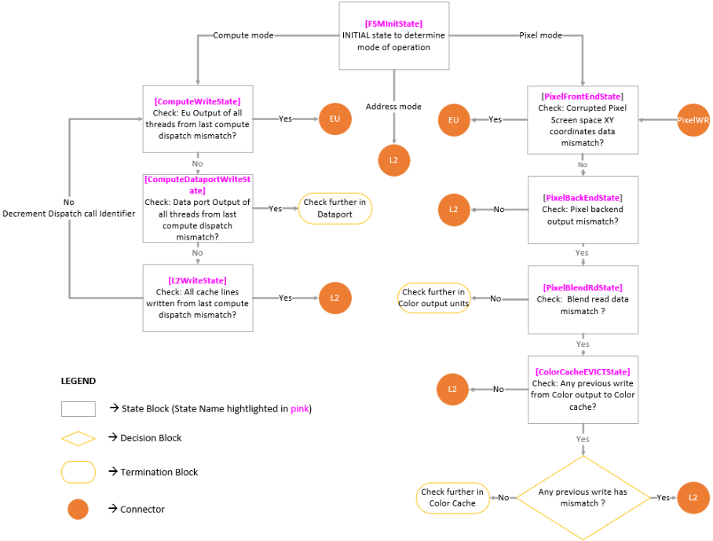
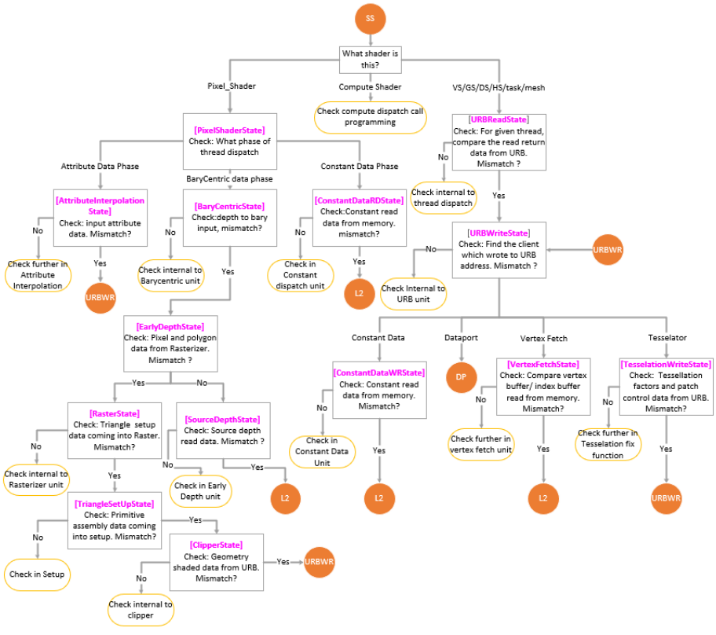

Automated Root-Cause Analysis of GPU Pipeline Corruptions in Graphics and Compute Workloads
面向 Graphics 与 Compute 工作负载的 GPU 流水线数据 corruption 自动化根因分析
简介
GPU 图形/计算流水线中的数据 corruption 表现为像素不匹配、视觉伪影或计算结果错误，可能源自硬件逻辑缺陷、race condition 或驱动软件 bug，传统人工 waveform 分析常需数天。Intel 提出 ARGO，一个 Python 实现的自动化根因分析框架：以 golden reference run 为基准，在 RTL 单元接口做系统性数据比对定位首个 mismatch，再沿流水线回溯数据依赖，锁定具体事务、硬件模块或软件配置问题。其核心是镜像 GPU 流水线数据通路的接口决策树，每个接口对应一个 FSM 状态，支持 Pixel、Address、Compute 三种模式，跨 RTL 仿真、emulation 与 post-silicon 平台运行。论文称其在生产 GPU debug 环境显著缩短 debug 周转时间与人力投入，但正文未给出量化数据，工具亦专有不公开。其 golden 比对加接口级 FSM 回溯的方法学模式，对团队 IP 验证的 debug 自动化建设有直接借鉴价值。
问题
GPU 图形与计算流水线中的数据 corruption（像素不匹配、视觉伪影、计算结果错误）根因定位困难：可能源自硬件逻辑缺陷、race condition 或驱动级软件 bug；单帧游戏画面或 AI kernel 可产生 TB 级 trace 数据，传统 interface checker 与人工 waveform 检查低效且不可持续，往往需要数天工程 effort 才能隔离根因，且要求同时精通 GPU 微架构、驱动内部实现与底层 tracing 技术。
方法
提出 ARGO（Automated Root-Cause for GPU pipeline corruptions），Python 实现的自动化 debug 框架：以 golden reference run 为基准，在 RTL 单元接口做系统性比对定位首个数据 mismatch；通过镜像 GPU 流水线数据通路的接口决策树（每个 pipeline interface 对应一个 FSM 状态）沿数据依赖逐级回溯，判定 corruption 责任方（EU、texture/dataport/Ray Tracing 等 shared function、SLM、L2 及其各 client、URB、rasterizer、triangle setup、clipper、thread dispatch 或 control surface 编程错误）；支持 Pixel Mode、Address Mode、Compute Mode 三种工作模式，同一框架跨 RTL 仿真、emulation 与 post-silicon 环境运行。
关键结果
未在论文中说明
创新点
相对传统人工 waveform 检查与局部 interface checker，ARGO 的区别在于：(1) 将根因分析建模为镜像流水线数据通路的 FSM 接口决策树，自动完成从 corruption 现象到具体事务/硬件块/软件配置错误的逐级回溯；(2) 显式区分硬件 bug 与驱动/控制面编程错误；(3) 同一框架跨 RTL 仿真、emulation 与 post-silicon 平台复用（platform-independent）。工具为 Intel 内部专有，论文未与已有学术或商业 debug 工具做对比。
团队参考意义
相关度级别：high
命中能力域：2.4 设计验证方法学 | 2.7 EDA/验证自动化与 AI 辅助
理由：2.4 能力域明确包含 bug triage 与 debug 方法学，ARGO 正是自动化根因分析/debug 框架，且覆盖 RTL 仿真、emulation 与 post-silicon 三类环境，与团队 IP 验证交付中的回归失败定位、emulation debug 场景直接对应；其 Python 框架化实现与可复用方法学沉淀也命中 2.7 的验证流程自动化。虽然论文面向 GPU 流水线，pixel/raster/texture 等具体 FSM 状态不可直接移植，但 golden run + 接口级比对 + 数据依赖回溯的框架模式可平移到 LPDDR/HBM4/UCIe IP 的数据通路 debug 与回归 triage，故判为 high。
建议动作：深入精读并做内部分享
中文全文
Automated Root-Cause Analysis of GPU Pipeline Corruptions in Graphics and Compute Workloads
Pravesh Dangwal pravesh.dangwal@intel.com, Himanshu Somaiya himanshu.somaiya@intel.com
摘要：图形与计算流水线中的数据损坏是图形处理器（GPU）设计验证与确认中最困难的挑战之一。此类问题可能表现为像素不匹配、视觉伪影或错误的计算结果，其来源可能是硬件逻辑缺陷、竞态条件或驱动层软件错误。传统的调试方法依赖大量的人工分析与波形检查，往往需要数天的工程投入才能隔离出根本原因。本文介绍一种内部研发的自动化数据损坏根因分析框架，用于加速寄存器传输级（RTL）仿真、硬件仿真与流片后环境中的调试。该工具为专有工具，未对外公开。该工具利用黄金参考运行在 RTL 单元接口处执行系统性比较，以识别并定位数据不匹配问题；随后跨流水线追踪数据依赖关系，从而精确定位导致损坏的具体事务、硬件模块或软件编程问题。所提出的方法提供了一种可扩展且与平台无关的调试解决方案，显著缩短了调试周转时间并减少了人力投入。来自真实 GPU 工作负载的案例研究表明，该方法能够精确且一致地识别损坏来源，从而在 GPU 验证过程中同时提升功能正确性与设计可靠性。
Introduction and Motivation
现代图形处理器（GPU）是当今最复杂的计算架构之一，为游戏中的高性能图形以及人工智能（AI）和机器学习的大规模计算工作负载提供支撑。渲染过程或基于 GPU 的通用计算是 GPU 硬件与图形驱动软件之间高度复杂的协作，涉及可编程着色器、固定功能单元以及软件管理的同步机制之间复杂的交互链。
单个 GPU 集成了数百个紧密耦合的硬件知识产权（IP）模块，包括几何、光栅化、计算、拷贝和存储器子系统，它们在多条流水线上并发运行。这些流水线——3D、计算和拷贝——执行各自不同的任务，但经常共享资源并依赖彼此的输出，从而形成了错综复杂的相互依赖关系。
为了保持正确性，GPU 的运行依赖于屏障、信号量和栅栏等显式同步机制来协调并发执行并避免竞态条件。此外，纹理和缓冲区等共享资源在跨流水线移动时，必须在有效的使用状态之间转换（例如，从拷贝目标转换为着色器资源）。任何错误配置，例如缺失屏障、无效的资源状态转换或不正确的缓存一致性策略，都可能导致隐蔽且间歇性的数据损坏。
单个游戏帧或 AI 内核可能产生数 TB 的追踪数据，使得人工检查不可行。确定损坏的根本原因——无论是源于硬件逻辑缺陷、存储器错误还是驱动层软件缺陷——都需要具备 GPU 微架构、驱动程序内部机制以及高级底层追踪技术方面的深厚专业知识，这使得该过程缓慢、成本高昂且容易出错。
GPU 损坏调试的关键挑战包括：
对于调试如此庞大且并行的系统，传统的接口检查器和人工波形检查效率低下且不可持续。这些挑战凸显了对一种系统化且自动化的调试框架的需求，该框架能够跨完整的 GPU 流水线追踪数据损坏，从软件应用程序接口（API）命令到底层寄存器传输级（RTL）事务。
Our Approach
我们提出 ARGO（A utomated R oot-Cause for G PU pipeline c O rruptions，GPU 流水线损坏的自动化根因分析），这是一个用 Python 实现的自动化调试框架。ARGO 旨在：
Methodology
ARGO 实现了一个镜像 GPU 流水线数据通路的接口决策树。每个流水线接口对应工具中的一个有限状态机（FSM）状态。
Finite-State Framework and Modes of Operation
启动时，ARGO 进入 FSMInitState（图 1），并在该状态下确定运行模式。该工具支持三种模式：像素模式（Pixel Mode）、地址模式（Address Mode）和计算模式（Compute Mode），分别对应不同的测试平台类型和工作负载类别。尽管三者的进入条件各不相同，但它们都遵循统一的 FSM 框架，通过遍历接口级状态来回溯损坏源。
Pixel Mode
在像素模式（Pixel Mode）中，用户在比较失败运行与黄金运行（golden run）所生成的图像时，提供观察到损坏的 {X,Y} 屏幕空间坐标。ARGO 在 PixelFrontendState 中收集并比较针对该像素发生的所有写入。该状态是输出合并（output merger）级的前端，在该流水线阶段，像素写入是按照实际渲染顺序排列的。如果在 PixelFrontEndState 处像素颜色值没有不匹配，工具将获取该像素所更新的地址，并将该信息传递给 PixelBackendState。在 PixelBackendState，工具收集并比较针对所提供地址的所有事务。如果该地址的数据不匹配，工具将该地址传递给 PixelBlendRdState；否则，如果没有不匹配，则将该地址传递给 L2CacheState。在 PixelBlendRdState 中，针对该不匹配的写入，工具检查是否执行过任何混合读取（blend read），以及混合读取的数据是否匹配。如果没有混合读取，或者混合读取匹配而像素后端（pixel backend）输出不匹配，则 ARGO 退出，向用户提供事务信息，并指出需要在像素后端单元中进一步调试。如果混合读取不匹配，工具会比较颜色缓存（color cache）中针对该缓存行（cacheline）的先前写入。如果先前写入匹配，且颜色缓存从 L2 读取的数据也匹配，则 ARGO 退出并提供事务信息，同时指出问题出在颜色缓存。如果从 L2 读取的数据不匹配，则 ARGO 将该地址传递给 L2CacheState。
Execution-Unit and Shared-Function Correlation
在 PixelFrontEndState 中，如果该像素的数据不匹配，工具将获取线程 1 标识符，并将其传递给 EUOutputState_Init（图 2）。在该状态中，工具查看执行单元（Execution Unit，EU）针对所识别线程的给定消息 2 的输出。如果该给定线程的消息对应的执行输出不匹配，则工具转入 ThreadDispatchState 检查线程派发载荷。如果线程派发载荷没有不匹配，则工具转入 EUOutputState，从同一线程的第一条消息开始检查，直至最初出现问题消息的消息计数。在 EUOutputState 中，ARGO 比较执行单元针对消息标识符 0（着色器程序的第一条消息）的输出，如果输出正常，则确定该消息的目标是哪个共享功能（shared function）。如果这是一条纹理采样消息，则工具转入 TextureEUState。在此状态下，工具判断纹理单元是否向执行单元返回了错误的采样值。如果返回的采样数据匹配，工具将消息计数加一并转到下一条消息。但如果纹理单元到 EU 的输出不匹配，则工具转入 L2TextureState，以判断纹理单元是否从内存/L2 接收到了正确的纹素（texel）值。如果 L2 向纹理单元的读取匹配，则 ARGO 退出并给出确切的线程，同时指出需要在纹理单元中进一步调试。

对于其他共享功能（如 Dataport（处理非类型化和类型化加载/存储）、光线追踪（Ray Tracing））也执行类似的操作。ARGO 持续递增该线程的消息计数，直到识别出向执行单元返回不匹配数据的消息。如果在某条消息处，执行单元发往共享功能的输出不匹配，则工具退出并指出需要在 EU 程序中进一步检查。如果某个共享功能向执行单元返回了不匹配的数据，则 ARGO 转入 L2<SharedFunction>State，以判断 L2/内存是否向该共享功能提供了不匹配的数据。如果 L2 提供了正确的数据，则 ARGO 退出并指出问题出在共享功能中，同时提供线程和消息信息。诸如纹理、Dataport 和光线追踪之类的共享功能包含 L1 缓存，当对比运行中出现 L1 命中与未命中差异的情况时，需要进行特殊处理。共享本地内存 3（Shared Local Memory，SLM）是另一种共享功能，它不由 L2 提供后备，因此 ARGO 对它的处理方式有所不同。如果 SLM 对 EU 的响应不匹配，则 ARGO 转入 SLMWriteState，以确定线程块/线程组（Threadblock/Threadgroup）中的哪个线程更新了当前消息正在读取的地址。如果 SLM 写入匹配，则 ARGO 指出需要在 SLM 内部进一步调试。如果写入不匹配，则 ARGO 针对新的写入线程标识符转入 EUOutputState_Init。
在 EuOutputState_Init（图2）中，如果输出匹配，则工具携带线程和消息标识符进入 DataportState。在 DataportState 中，工具对传入消息进行解码，以查找是否存在与该消息关联的控制面（control surface）状态。如果该消息是有状态的，则工具会比较控制状态数据，若状态数据不匹配则退出，并指出控制面中存在编程问题。如果控制状态匹配，则工具会比较 DataportState 的输出。如果这是一条渲染目标写入（render target write）消息且数据端口（dataport）输出匹配，则工具退出并指出问题出在颜色管线（color pipe）中。如果数据端口输出不匹配，则无论消息类型如何，工具都会指出问题出在数据端口中。

L2 Cache Correlation and Client Resolution
当 L2 返回不匹配的数据时，ARGO 会转入 L2CacheState（图 3）。L2CacheState 的输入是返回给客户端时出现不匹配的那个地址。L2 可以在虚拟地址域或物理地址域下工作。如果 L2 工作在物理地址空间，则需要额外执行一步虚拟地址到物理地址的转换。L2CacheState 的目标是确定先前写入同一地址的客户端。如果先前的写入不匹配，则 ARGO 会转向 L2 中负责该不匹配写入的客户端。有多个客户端可以向 L2 写入数据。下面列出了可以执行写入操作的客户端，以及工具针对每个客户端所采取的具体操作。

Geometry and Raster Correlation
In the cases where thread dispatch payload mismatches at the ThreadDispatchState (Figure 2), tool moves to ShaderState (SS in diagram, Figure 4). Here ARGO figures which shader is the dispatch mismatching for.
In case of Geometry based shaders (Vertex Shader, Hull Shader, Domain Shader, Geometry Shader, Amplification Shader, Mesh Shader) tool moves to URBReadState where it finds the URB addresses that thread is reading using the thread identifier from dispatch state. If the URB read data matches, then tool exits pointing to check internal to Thread Dispatch Unit. If the URB read data mismatches, then tool moves to URBWriteState. Here tool finds which client is performing the latest write to the URB read address. If the latest write matches, then tool exits pointing to check further in URB unit. If the write mismatches, then tool moves to different state based on the client.
In case of Pixel shader, tool moves to PixelShaderState. Here the tool determines which phase of the dispatch is mismatching. There are 3 phases - Barycentric data, attribute data, constant data. Tool follows different paths for mismatch in each of these phases as below
If rasterizer output to early depth mismatches, then tool moves to RasterState. The function of rasterizer is to use the polygon data from triangle setup function and calculate the pixels which will be covered by the incoming polygon. If the incoming polygon data from triangle set up is matching then tool exits pointing to issue in rasterizer unit. If the incoming data mismatches then tool moves to TriangleSetupState. The function of triangle setup state is to provide data for efficient rasterization of the polygon (usually triangles) using the three vertices in screen space as provided by previous primitive assembly stage. In this state the tool checks the input objects from primitive assembly, if input matches then tool exits pointing to issue in triangle setup. If input mismatches then tool moves to ClipperState. In this state, primitve assembly and frustrum clipping functions are performed. The input to clipper state are the vertices shaded by previous geometry stages. In this state the tool figures the address of the URB where these three vertices are stored. Tool gets the read return data for the vertices and if they match then tool exits pointing to issue in clipper unit. If the vertex return data mismatches, then tool moves to URBWriteState.

Compute Mode and Address Mode
If the workload is purely compute specific like AI/ML workloads, then ARGO follows a different approach. For such cases, the tool begins at FSMinitState and then moves to ComputeWriteState (Figure 1). Here the tool identifies the last compute dispatch call and compares the output of execution units for all threads generated by this dispatch. If any mismatch is observed for a thread, then ARGO moves to EUOutputState_Init passing the thread and message identifier. If no mismatch is observed for any thread, then ARGO moves to ComputeDataportWriteState. Here tool compares all the write data for all the threads of last dispatch call. If mismatch is seen, then the tool exits pointing to check further in dataport unit. If there is no mismatch, then tool moves to L2WriteState passing all the addresses that the threads from last dispatch call were updating. Here tool compares the output of L2 eviction and if mismatch is seen for a comparable address, then tool moves to L2CacheState passing the address to figure out which client wrote to this address earlier. If there is no mismatch observed in L2WriteState then the tool decrements the dispatch call identifier moving to the previous dispatch and moves to ComputeWriteState and the loop follows until it finds the mismatch. In the address mode, the testbench provides an address where the final corruption is observed. In this case, ARGO moves from FSMinitState to L2CacheState to figure out which client wrote to this address and thus move appropriately to the defined states.
Results
在量产 GPU 调试环境中部署 ARGO 已经证明了：
这些结果验证了 ARGO 是面向多样化工作负载与环境的可扩展 GPU 调试不可或缺的框架。
Conclusion
调试 GPU 流水线损坏一直是 GPU 开发中最耗时、最消耗资源的环节之一。ARGO 引入了一种可扩展的自动化方法，将架构感知、针对性分析与跨平台适用性相结合。它能够将损坏隔离到精确的 RTL 接口与事务，同时大幅缩短周转时间，代表了 GPU 验证方法学的一项进步。
ARGO 不仅加速了调试，还提升了工程效率，使团队能够以更快的上市速度交付更高质量的 GPU。其设计原则广泛适用于其他大规模 SoC 调试环境，使 ARGO 成为硬件验证与确认领域的一项宝贵贡献。
Appendix
1 GPU 中的线程（Thread）是在 GPU 并行处理核心上独立运行着色器或计算程序的最小执行单元。
2 着色器程序中的消息（Message）是指 GPU 核心（执行单元，Execution Unit）用于与内存或任何其他专用共享功能单元（如纹理单元或加载存储缓存）进行通信的加载或存储指令。
3 共享本地内存（Shared Local Memory）是 GPU 编程模型中同一工作组（workgroup）内各线程共享的一种小容量、高速的片上内存。
4 层次包围盒（Bounding Volume Hierarchy）是一种树状数据结构，它将场景的几何体组织成嵌套的包围形状，有助于加速光线-三角形相交测试。
5 统一返回缓冲区（Unified Return Buffer）是图形管线中不同阶段（如顶点着色器、曲面细化和几何着色器）用于高效共享数据的共享内存区域。